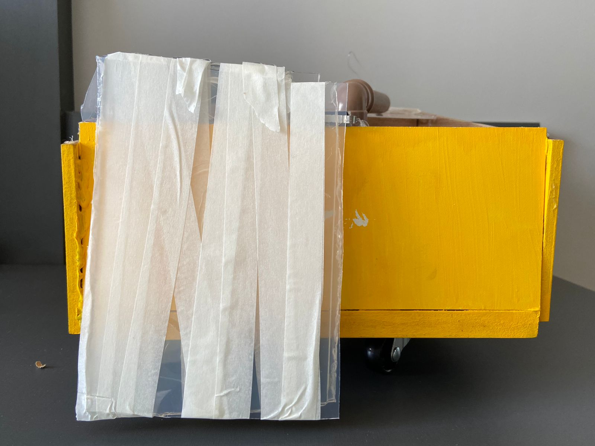
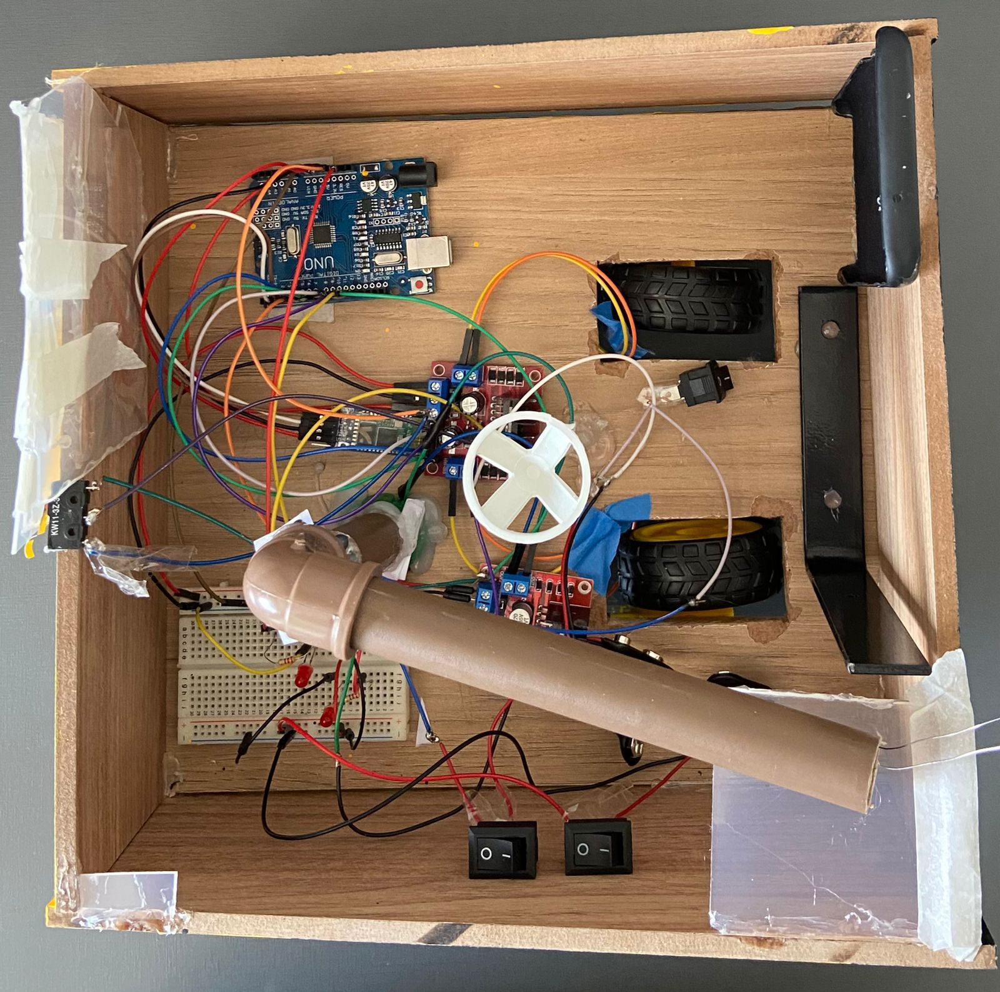
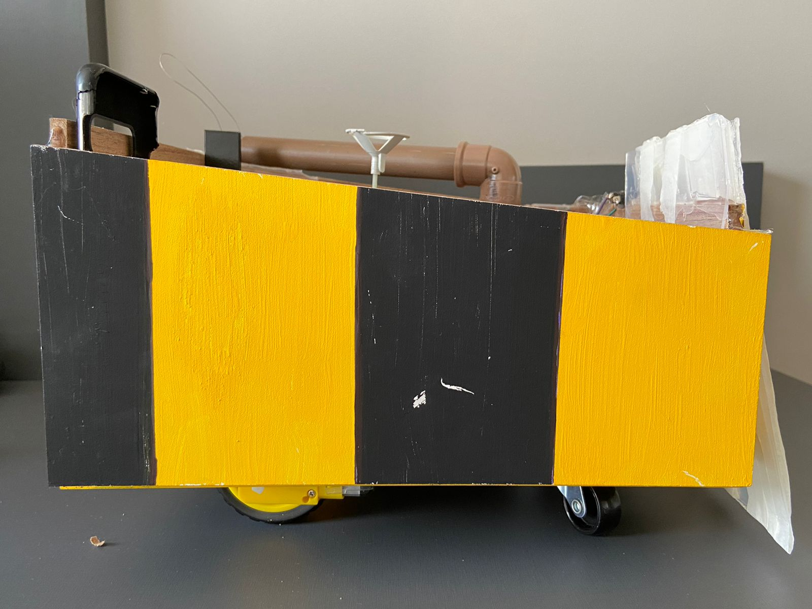
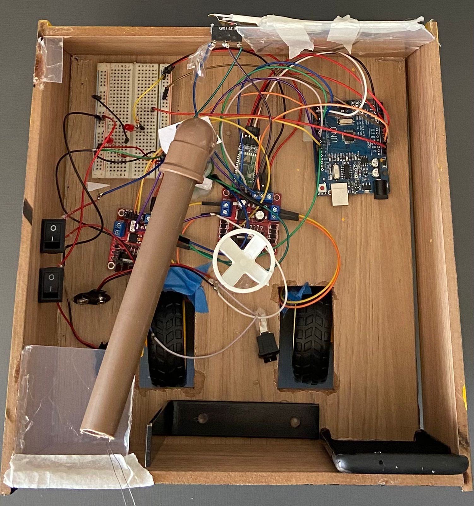
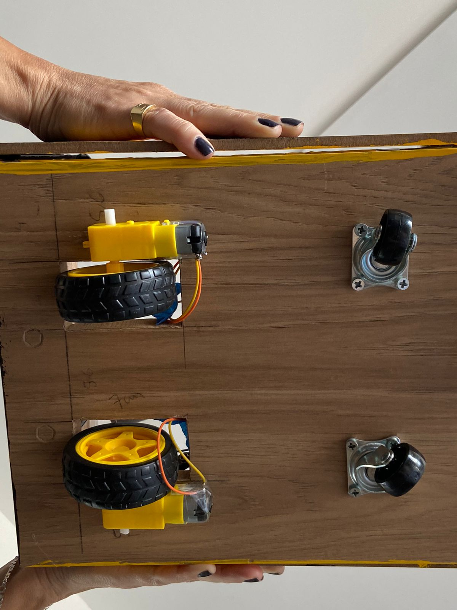
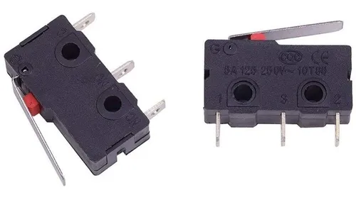

COLMEIA
Sobre o robô
O robo que produzimos tem com o objetivo final no uso de batalhas entre robos. Contudo, em ser destinado para esse produto, o robo consegue ser utilizado como um carrinho com a intenção de brincar remotamente. Ele foi produzido com produtos extremamente baratos o que deixa o produto infinamente mais barato que outros no mercado. A parte elétrica foi utilizado principalmente modelos diferentes de peças de arduino.

Imagens do nosso robo





Hardwares usados no robô

Em nosso hardware, umas das partes principais de nosso robô seria a placa Arduino Uno, pois ela que é o cérebro de nosso robô. Ela interpreta as informações que jogamos para ela, sendo estímulos ditados por nossos sensores de fim de curso, ou pelo bluetooth (HC-05), e dependendo de qual for a informação, ela performa diferentes ações, podendo ser andar para frente, ativar a arma entre outras coisas. E juntamente com o breadboard, o objeto branco ao lado de nosso Arduino, que serve como um suporte para ajudar na fiação do robô.
Para captarmos as instruções do celular e mandar para o nosso robô para ele andar, utilizamos o HC-05, que é um dispositivo bluetooth. O que ele faz é ficar esperando as informações do celular, então quando é recebido algo, ele manda a informação para o Arduino por meio de fios.


Esse equipamento se chama Shield l298n, e ele é responsável por uma variedade de funções. Ele é responsável por diminuir a voltagem das baterias para uma voltagem (não perigosa) para o Arduino, ele recebe também informações que o Arduino passa para ela sinais altos e baixos, 1 e 0, e dependendo da combinação entre eles, ele faz com que os motores consigam movimentar o carrinho para todos os lados.
Os motores de redução são partes que todos provavelmente conhecem e que são fundamentais para nosso robô, ao receber uma voltagem entre um limite conhecido, os motores aceleram de acordo com a voltagem oferecida para o motor. Eles são chamados de redução, por causa de engrenagens dentro dele que faz com que o RPM dele diminua e seja possível passar uma voltagem maior, assim o motor em si faz uma força maior em uma distancia menor, o que é bom para as rodas, já que elas tem que fazer um alto torque para mexer o robô inteiro


Os sensores fim de curso são responsáveis pela ativação de nossa arma. Eles funcionam de acordo com uma alavanca, quando essa alavanca desce, ela ativa um botão, um switch, que quando ativado, ela passa corrente. Essa corrente que é passada, o nosso Arduino percebe a mudança, e quando essa mudança ocorre ele ativa a arma.
ARQUI VAI FICAR A ARMA LOL COMEAGOAINGAOI NFA
Equipe
Lucas Raoni Hideki Antunes
Victor Augusto Viera
Gabriel Alves Breviglieri
Mateus de Lima Raymundo
55 +11 97759-2872
https://instagram.com/mahauni
.jpg)
https://facebook.com/mahauni